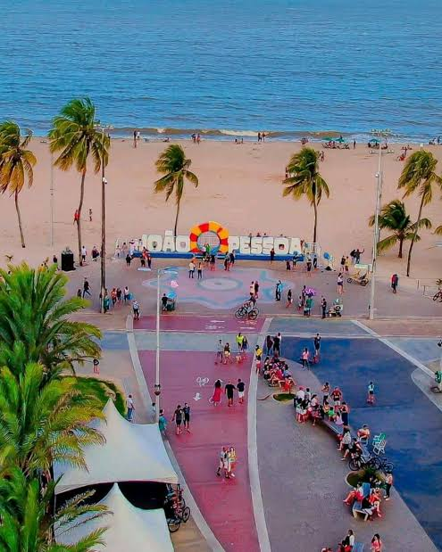
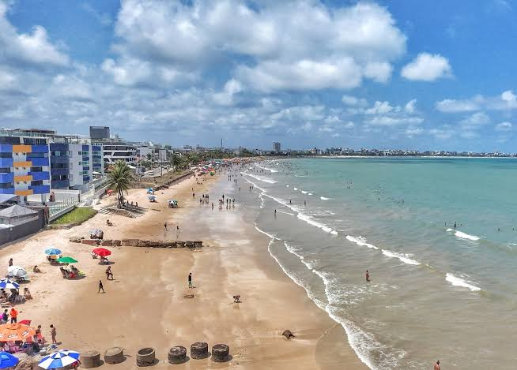

Praia de Tambaú
É uma das praias mais conhecidas de João Pessoa. Possui calçadão, hotéis, bares, restaurantes e comércio de artesanato. Também é ponto de saída para passeios até as piscinas naturais de Picãozinho.
Algumas das praias urbanas mais conhecidas da capital paraibana.
É uma das praias mais conhecidas de João Pessoa. Possui calçadão, hotéis, bares, restaurantes e comércio de artesanato. Também é ponto de saída para passeios até as piscinas naturais de Picãozinho.

Praia bastante conhecida pela sua beleza, faixa de areia e orla. É uma área muito procurada para caminhadas, atividades físicas e para apreciar a paisagem do litoral.

Localizada no litoral norte da cidade, o Bessa possui uma extensa faixa de areia e áreas procuradas para lazer, banho de mar e atividades relacionadas ao turismo.